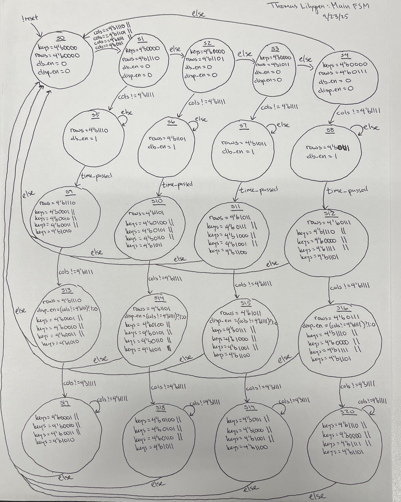
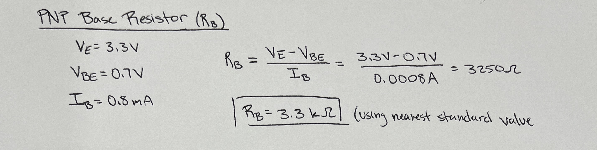
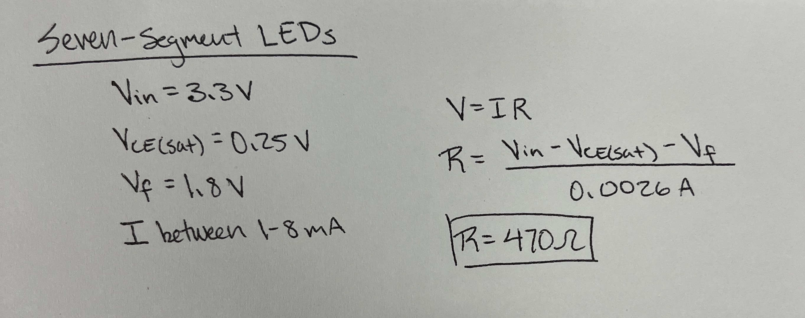
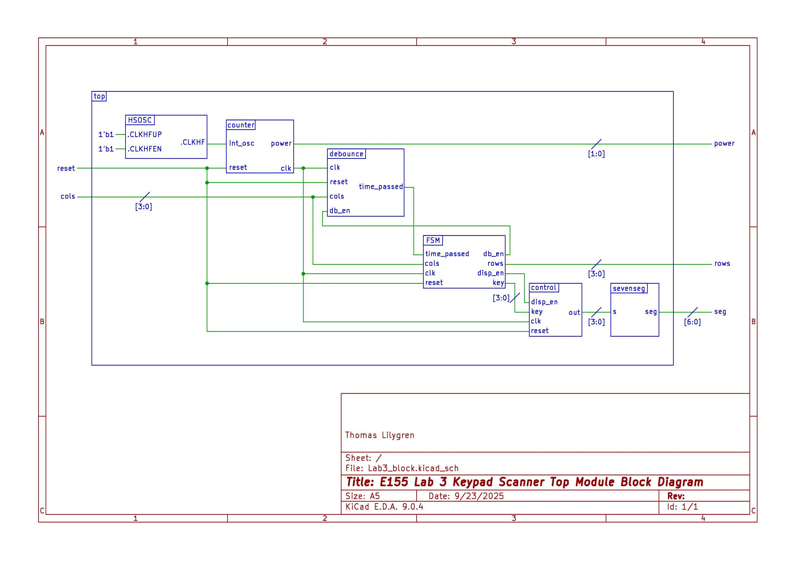
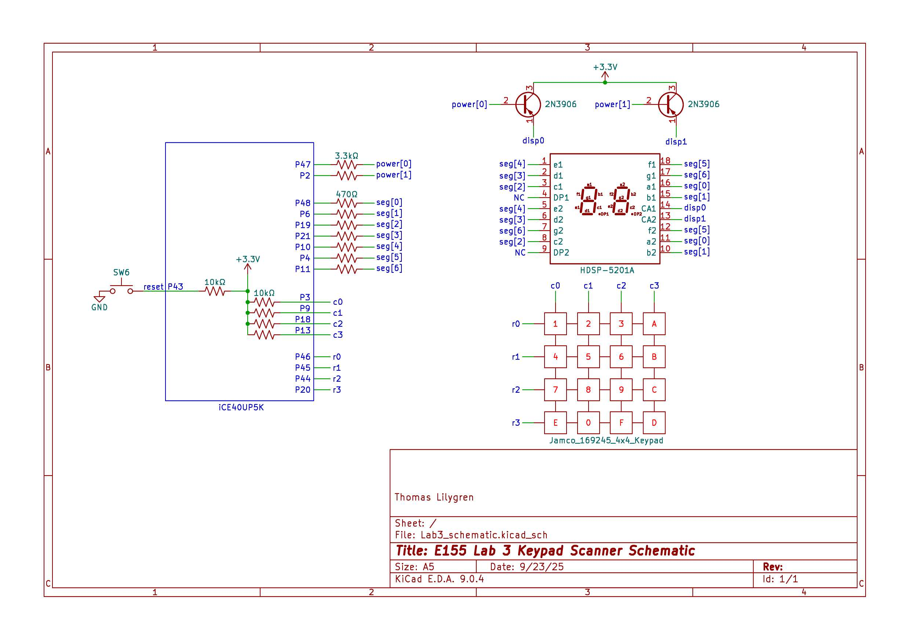

Lab 3: Keypad Scanner
Introduction
In Lab 3, a 4x4 keypad scanner is encoded in SystemVerilog to showcase two hexadecimal digits on a dual seven-segment display. The lab focuses on addressing issues like metastability from asynchronous inputs and button debouncing, while building on concepts from lab 2 like time-multiplexing and driving like outputs with the same GPIO pins.
Design and Testing
A comprehensive finite state machine serves as the backbone for this lab, and it must be thoroughly understood before implementing any hardware code. This 21-state finite state machine initializes row, column, and enable values, conducts a scanning process to find the key pressed, calls on a separate debouncer finite state machine, controls the display logic, and only one value is recorded regardless of how long a key is pressed. A detailed state transition diagram for this main finite state machine can be found in Figure 1.
The keypad scanner itself has no inherent power or ground pins. To bypass this initial hurdle, all rows are initially driven low (powered) while all columns set high with 10 kOhm pull-up resistors embedded in this iCE40UP 5K FPGA board. After this initialization step, the main finite state machine begins the scanning process, powering one row at a time and reading the column behavior. When a button is pressed, it shorts the corresponding row and column that it intersects. If one column remains low for a given powered row, the FSM skips over the rest of the scanning states and enters a debouncing state designated for that particular row. Otherwise, the scanning process continues, setting the next row low and checking the same column condition.
After the scanning portion of the main FSM, it branches into four different paths, one for each of the possible rows that could be shorting one of the columns. These debouncing states activate a debounce enable variable and call on a separate module that implements a counter to delay the key registration process by roughly 20 ms. Buttons are subject to a bouncing phenomenon in which multiple button presses may register even though the user only physically presses it once. Without accounting for this behavior, the same value would appear multiple times on the dual seven-segment display, even though that is not what the user intended. This 20 ms delay is sufficient to eliminate debouncing without prompting the user to hold the button for too long.
After passing through the debouncing states, the FSM moves on to the next states that check whether or not the button is still pressed. The key must be held throughout the debouncing stage to formally register the key value to be displayed. This state toggles a display enable variable that allows a formalized key value, generated from the unique row and column combination, to pass through a time-multiplexer and appear on the dual seven-segment display. The multiplexer ensures that the most recent digit appears on the right side of the display and previous digit to appear on the left.
Once the display behavior is settled, the FSM moves to the next states that check whether the key is still pressed. If the key is still pressed, it must remain in that state before returning to the initial state to ensure that multiple instances of that key do not keep cycling through the FSM and that any other auxilary button presses do not interfere with the value that should be displayed.
The clock signal driving the entire process is derived from the internal 24 MHz High-Speed Oscillator (HSOSC). A counter was implemented to divide the clock to 120 Hz. This new clock frequency is fast enough such that both displays
Finite State Machines
The main finite state machine reads the columns and determines whether that it is a valid input, meaning that only one button is pressed at a time. States 1 through 4 implement a scanner that drives one of the four rows low at a time. These scanning states split the FSM into four branches, one for each of the four possible row bits that cause any of the columns to short. The FSM controls a debounce enable variable that controls when the debounce module is active, a display enable variable the directs when the key value can be displayed, and an internal “pressed” variable that remains when there is a valid input. It also receives a “time passed” variable from the debounce module that indicates whether or not the debounce delay has passed.

Calculations
Like the last lab, the power for the dual seven-segment display is controlled with a 2N3906 PNP transistor that behaves as a switch. To preserve the FPGA’s GPIO pin functionality, the current sunk by the PNP base pin should be less than 8 mA. With a known 3.3 V emitter voltage, 0.7 V emitter to base voltage drop, and a desired current gain of 10, Ohms Law can be applied to determine the ideal resistor value.

Each segment in the dual display has a forward voltage of 1.8 V. The supplied voltage from the FPGA is 3.3 V and the saturated emitter to collector voltage drop from the transistor is 0.25 V. A current between 1 mA to 8 mA is sufficient to illuminate the LEDs while still protecting the GPIO pins. Using this knowledge, a current-limiting resistor can be calculated with Ohm’s Law, as shown in Figure 4.

Technical Documentation
Block Diagrams
The completion of this lab involved five separate modules: a top-level module that instantiates the clock and calls all submodules, the main FSM that controls the button logic, a debounce module, a multiplexer module the controls which of the two displays receives the digit, and a seven-segment decoder module that receives the key value and generates the corresponding digit. The interactions between each of these modules is illustrated in Figure 5.

Electrical Schematics
The two displays share common outputs. Each corresponding output is fed to a 460 Ohm resistor. To ensure uniform illumination, each output pin pair is wired in parallel with the other output pairs. The current for each segment output is fed into an available GPIO pin on the FPGA board.

Results and Discussion
This lab proved to be moderately successful. Absent the synchronizing logic, the keypad successfully scans through all rows to generate the proper key value input. The 20 ms debounce logic requires the button to be pressed slightly longer for the output to fully register. While I could not properly implement the synchronization aspect of the lab, I believe that it is very possible to actually implement in the near future. The primary issue was that the synchronized columns would appear two clock cycles behind the rest of the logic, meaning the set row values would get stuck at specific values. By setting the rows high in one state, implementing a two-clock-cycle delay, and then scanning the synchronized columns, this issue could be solved as the rows and synchronized columns would follow the same timing. This would increase the duration for which the user must depress the button to ensure all necessary state register the button press to display the value.
Conclusion
This was a tough lab. Even over the course of two weeks and between 35-40 hours of work, timing issues from the synchronizer proved too difficult to overcome. Without the synchronizer the hardware implementation still works well, although there is more room for error and metastability. While the lab may be over, I will continue to work on this project in my free time to implement the synchronizer and expand my verification abilities by writing testbenches for all modules, although that should have been the step before hardware implementation.